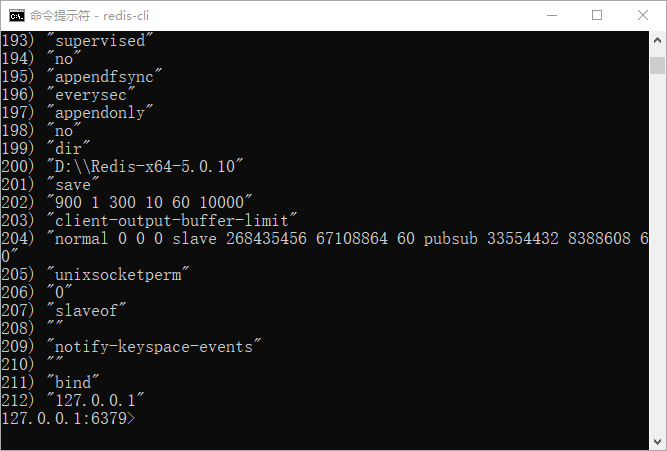

Redis配置文件
在 Redis 的安装目录中有一个名为 redis.windows.conf 的配置文件，若在 Linux 中则为 redis.conf，本节以 Windows 系统为例对该文件进行讲解。
查看配置项
您可以使用 Redis 的CONFIG命令来查看或者更改 Redis 的配置信息。语法格式如下：
redis 127.0.0.1:6379> CONFIG GET 配置名称
示例如下，获取日志等级的配置项：
redis 127.0.0.1:6379> CONFIG GET loglevel
输出结果如下：
1) "loglevel" 2) "notice"
通过使用*可以查看所有配置项，命令如下：
redis 127.0.0.1:6379> CONFIG GET *
输出结果：
1) "dbfilename" 2) "dump.rdb" 3) "requirepass" 4) "" 5) "masterauth" 6) "" 7) "cluster-announce-ip" 8) "" 9) "unixsocket" 10) "" 11) "logfile" 12) "" 13) "pidfile" 14) "" 15) "slave-announce-ip" 16) "" 17) "replica-announce-ip" 18) "" 19) "maxmemory" 20) "0" 21) "proto-max-bulk-len" 22) "536870912" 23) "client-query-buffer-limit" 24) "1073741824" 25) "maxmemory-samples" 26) "5" 27) "lfu-log-factor" 28) "10" 29) "lfu-decay-time" 30) "1" 31) "timeout" 32) "0" 33) "active-defrag-threshold-lower" 34) "10" 35) "active-defrag-threshold-upper" 36) "100" 37) "active-defrag-ignore-bytes" 38) "104857600" .....
如图所示：

图1：Redis配置项
注意：由于版本和操作系统的不同，配置项的数量会存在差异。
更改配置项
如果想要重新设置配置项，需要使用以下命令：
redis 127.0.0.1:6379> CONFIG SET 配置项名称 配置项参数值
示例如下：
127.0.0.1:6379> CONFIG SET loglevel "verbose" OK 127.0.0.1:6379> CONFIG GET loglevel 1) "loglevel" 2) "verbose"Redis 的日志级别有以下四种：
1. debug：会打印出很多信息，适用于开发和测试阶段。 2. verbose（冗长的）：包含很多不太有用的信息，但比debug简化一些。 3. notice：适用于生产模式。 4. warning : 警告信息。Redis 默认设置为 verbose，开发测试阶段可以用 debug，生产模式一般选用 notice。
更改配置文件
Redis 某些配置信息无法直接通过命令修改，此时就需要修改配置文，比如设置 Redis 允许远程连接的功能。配置文件修改如下：1.注释掉本地IP地址,绑定要访问的外部IP #bind 127.0.0.1 ::1 bind 192.168.1.1 2.关闭保护模式(把yes改为no) protected-mode no 3.重启服务器,windows重启 redis-server --service-stop redis-server --service-start Linux重启 sudo /etc/init.d/redis-server restart
配置项说明
下表对一些配置项做了简单地说明：
| 配置项 | 参数 | 说明 |
|---|---|---|
| daemonize | no/yes | 默认为 no，表示 Redis 不是以守护进程的方式运行，通过修改为 yes 启用守护进程。 |
| pidfile | 文件路径 | 当 Redis 以守护进程方式运行时，会把进程 pid 写入自定义的文件中。 |
| port | 6379 | 指定 Redis 监听端口，默认端口为 6379。 |
| bind | 127.0.0.1 | 绑定的主机地址。 |
| timeout | 0 | 客户端闲置多长秒后关闭连接，若指定为 0 ，表示不启用该功能。 |
| loglevel | notice | 指定日志记录级别，支持四个级别：debug、verbose、notice、warning，默认为 notice。 |
| logfile | stdout | 日志记录方式，默认为标准输出。 |
| databases | 16 | 设置数据库的数量（0-15个）共16个，Redis 默认选择的是 0 库，可以使用 SELECT 命令来选择使用哪个数据库储存数据。 |
|
save[seconds] [changes] |
可以同时配置三种模式： save 900 1 save 300 10 save 60 10000 |
表示在规定的时间内，执行了规定次数的写入或修改操作，Redis 就会将数据同步到指定的磁盘文件中。比如 900s 内做了一次更改，Redis 就会自动执行数据同步。 |
| rdbcompression | yes/no | 当数据存储至本地数据库时是否要压缩数据，默认为 yes。 |
| dbfilename | dump.rdb | 指定本地存储数据库的文件名，默认为 dump.rdb。 |
| dir | ./ | 指定本地数据库存放目录。 |
|
slaveof <masterip> <masterport> |
主从复制配置选项 | 当本机为 slave 服务时，设置 master 服务的 IP 地址及端口，在 Redis 启动时，它会自动与 master 主机进行数据同步。 |
| requirepass | foobared 默认关闭 | 密码配置项，默认关闭，用于设置 Redis 连接密码。如果配置了连接密码，客户端连接 Redis 时需要通过<password> 密码认证。 |
|
maxmemory <bytes> |
最大内存限制配置项 | 指定 Redis 最大内存限制，Redis 在启动时会把数据加载到内存中，达到最大内存后，Redis 会尝试清除已到期或即将到期的 Key，当此方法处理 后，若仍然到达最大内存设置，将无法再进行写入操作，但可以进行读取操作。 |
| appendfilename | appendonly.aof | 指定 AOF 持久化时保存数据的文件名，默认为 appendonly.aof。 |
| glueoutputbuf | yes | 设置向客户端应答时，是否把较小的包合并为一个包发送，默认开启状态。 |
如果想全面了解配置选项，可以参考官方网站相关文档：点击前往。
关注公众号「站长严长生」，在手机上阅读所有教程，随时随地都能学习。内含一款搜索神器，免费下载全网书籍和视频。

微信扫码关注公众号